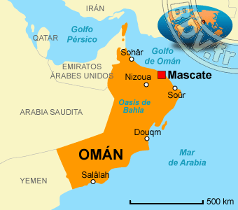

<html>
<meta charset="UTF-8">
<!DOCTYPE html>
<html>
<head>
<body>
<h1><p align="center">  </p></h1>
<link rel="stylesheet" href="estilos.css">
</head>
</body>
</html>
<center>
<center>
<p>Historia:En 1913 la rivalidad entre el imán de Omán y el sultán de Mascate provocó una rebelión en la que las tribus del interior apoyaron al imán. La paz se restableció en 1920 con el tratado de Sib, y duró hasta 1954. El 23 de julio de 1970 el nuevo sultán Qabus ben Said cambió el nombre de la nación por sultanato de Omán.
<p>Politica:Omán es una monarquía absoluta en la cual el Sultán de Omán ejerce autoridad absoluta, pero su parlamento tiene algunos poderes legislativos y de supervisión.8 En noviembre de 2010, el Programa de Desarrollo de las Naciones Unidas nombró a Omán, de entre 135 países en todo el mundo, como el país que más había mejorado durante los 40 años precedentes..</p>
<p>Geografía: Localizado al suroeste de Asia, en la costa sureste de la península arábiga.
<p>Capital:Mascate
<p><a href="../index.html.">¿Esta no es el pais que buscabas?<a><p> 

 


</html>
